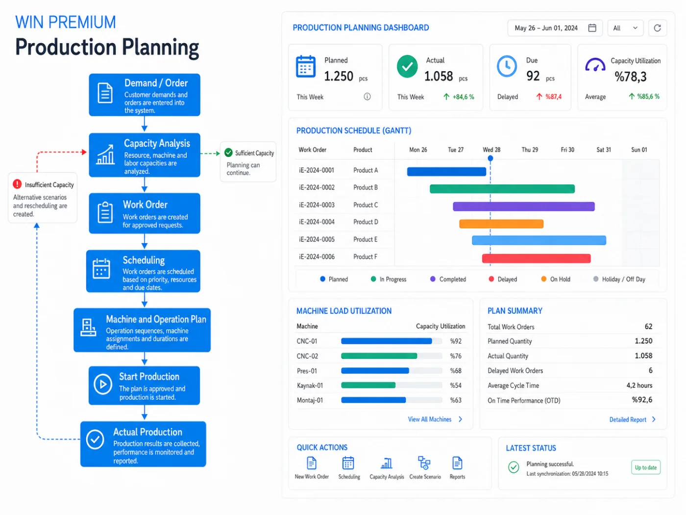

{{ o.title }}
{{ o.desc }}

KULLANIM SENARYOSU · ÜRETİM PLANLAMA
Üretim planlama; talebi kapasiteyle, iş emrini çizelgeyle ve çizelgeyi sahanın gerçeğiyle sürekli eşleştirmektir. WinPremium siparişi kapasiteye karşı sınar, çakışmayı ve termin riskini plan onaylanmadan gösterir; saha ilerledikçe çizelge kendini günceller.

{{ k.label }}
{{ k.sub }}
PLANLAMA DÖNGÜSÜ
Bir adıma dokunun; planlamanın o aşamada neyi kontrol ettiğini ve neyi tetiklediğini görün. Kapasite yetmezse döngü otomatik yeniden planlamaya döner.
ADIM {{ activeNum }} / 6
{{ activeBody }}
Kontrol: {{ activeControl }}
{{ activeMetricLabel }}
PLANLAMA NEYİ DEĞİŞTİRİR?
{{ o.desc }}